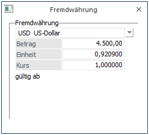

Die WinLine bietet Ihnen die Möglichkeit, Belege in ausländischer Währung direkt zu verbuchen ohne diese erst umrechnen zu müssen. Sie gelangen in dieses Fenster wenn Sie beim Buchen in der Spalte
Ø B/N
FB (Fremdwährung Brutto) oder FN (Fremdwährung Netto) eingeben.
Das Programm rechnet den eingegeben Fremdwährungsbetrag/Einheit x Kurs und bucht den Betrag in der Landeswährung.
Ø Fremdwährung
Mittels Auswahllistbox können Sie die gewünschte Fremdwährung anwählen. Die Fremdwährungen werden im Menüpunkt Stammdaten/Mandantenstammdaten/Fremdwährungscode angelegt.
Ø Betrag
Hier wird der Fremdwährungsbetrag eingegeben.
Ø Einheit
Angabe der Fremdwährungseinheit, für welche der Umrechnungskurs gültig ist. Der Betrag in Landeswährung wird nach der Formel Fremdwährungsbetrag/Einheit x Kurs berechnet. Es wird automatisch die Einheit aus dem Fremdwährungsstamm vorgeschlagen, diese Einheit kann hier aber noch übersteuert werden.
Ø Kurs
Es können sechs verschiedene Kurse hinterlegt werden, von denen jeder max. 14stellig (10 Vor- und 4 Nachkommastellen) ist. Multiplikationsfaktor für Umrechnung der Fremdwährung. Es wird automatisch der Kurs aus dem Fremdwährungsstamm vorgeschlagen, dieser kann hier aber noch manuell übersteuert werden.

Achtung
Wurde im Fremdwährungsstamm (siehe Kapitel Fremdwährungscode aus dem WinLine ALLGEMEIN - Handbuch) bei der verwendeten Währung die Option "EURO-Berechnungsmethode" aktiviert, kann während der Buchung der Kurs nicht mehr verändert werden.
Neben der Einheit und dem Kurs der Fremdwährung werden auch Einheit und Kurs der Landeswährung 1 des Mandantenstammes angezeigt.
Kann zusätzlich dazu die Fremdwährung selbst nicht geändert werden, so liegt das daran, dass eines der Konten aus der Buchung eine fixe Fremdwährung hinterlegt hat.
Ø Historie-Button
Mit dem Historie-Button gelangen Sie in die Fremdwährungshistorie.